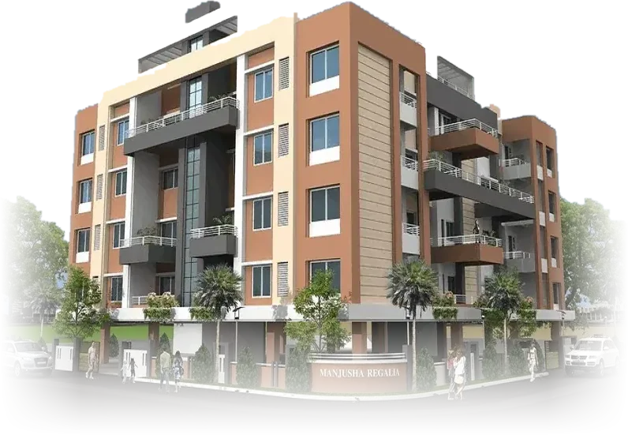
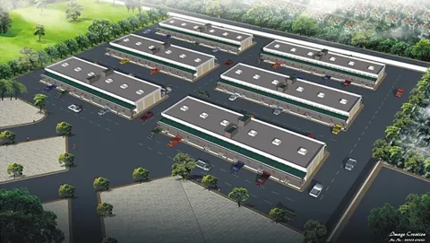
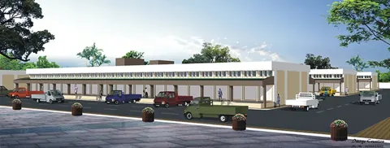
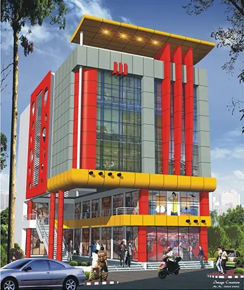
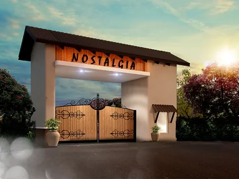
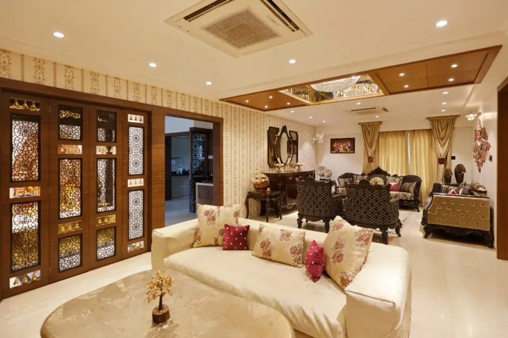
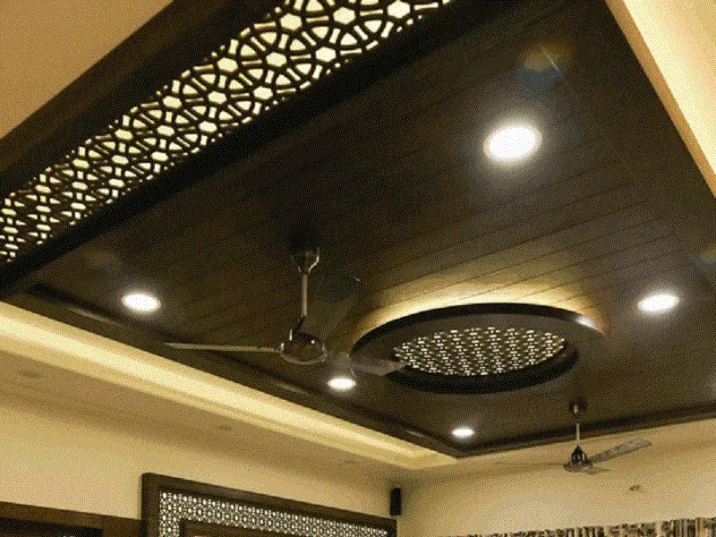
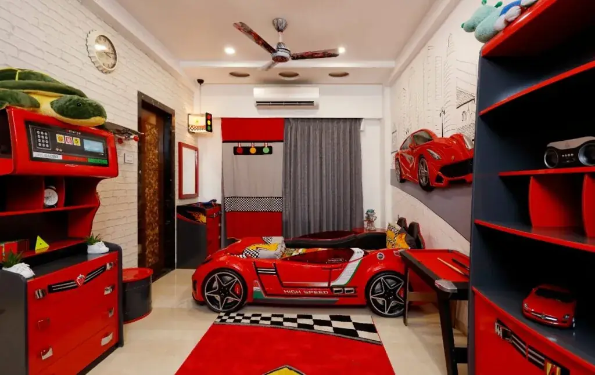

Managing Director
Ar. Arun Chinchmalatpure
- 1978B.Arch, V.R.C.E. Nagpur
- 1980Establishes Chinchmalatpure Architects
Practice since 1980

Architecture · Interiors · Project management
Four decades of work for market committees, co-operatives, schools, developers and families across Vidarbha.

Case studyAPMC Nagpur — godowns, market shed & training centreRead →Five Agricultural Produce Market Committees in Nagpur district appear on the practice's client list. The drawings below were made for the committee in Nagpur.


Storage for wholesalers, sheds where trucks unload in the shade, and a hall for meetings and farmer training: what a market committee needs beyond the auction floor.
Nagpur's Zero Mile Stone was set by British surveyors at the centre of colonial India. Every committee on the practice's client list is a short drive out from it. Select a town to see who the practice worked for there.
The practice's base since 1980
Positions and distances are approximate straight lines; client names are as listed by the practice.
Vidarbha grows cotton. Two farmers' co-operatives on the practice's client list sit on that chain: a ginning and pressing society in Saoner, and a spinning mill in Nagpur.
Picked and brought to market.
APMC market yardsSeed separated from fibre.
Ginning Pressing & Prakriya Sanstha, SaonerLint pressed into bales.
Same society, SaonerBales spun into yarn.
Shetkari Sahakari Soot Girni, NagpurThe building types are plain and hard-working: ginning and pressing factories, industrial sheds, godowns.Building types as listed by the practice. Drawings of this work are not yet published.
Clients: Babasaheb Kedar Ginning Pressing & Prakriya Sanstha, Saoner · Babasaheb Kedar Shetkari Sahakari Soot Girni, Nagpur.
Education societies, a state police-housing corporation, community halls, town halls, libraries and temples: buildings with many users and a public client.

Flat schemes for developers, whole townships planned from gate to club house, and commercial buildings.
"Ushakaal" means dawn. At least eight buildings in the practice's archive carry the name, numbered like a series. Ushakaal-9, on the Vinoba Gram layout in Nagpur, was designed for Swapna Shilp Developers — the drawing's title block says so.

Developers on the client list
Fourteen private-sector clients, twelve in Nagpur and two in Mumbai.
Fifteen bungalows designed for Nagpur families, and interiors photographed after the families moved in. Owners are not named.




The complete archive from the practice's website, catalogued. Select a row to enlarge it.
| No. | Project |
|---|
Architecture, interior design and project management consultancy from one office, with structural, electrical, plumbing and air-conditioning consultants.
Managing Director
Director
From site and brief to approval and construction drawings — conceptual, schematic, development.
Homes, offices, banks, colleges, banquet halls, shops and resorts, planned with the client; Vaastu where wanted.
An owner's-side consultant with regular site supervision, led by an MSc-trained project manager.
Also offered: property valuation · Consultants: structural, electrical, plumbing, air-conditioning
Pick the closest, add a few lines, and the studio will call you back.
Prototype only — nothing was sent
Project type: . On the live site this would reach the studio. To contact the practice now, use the details alongside.